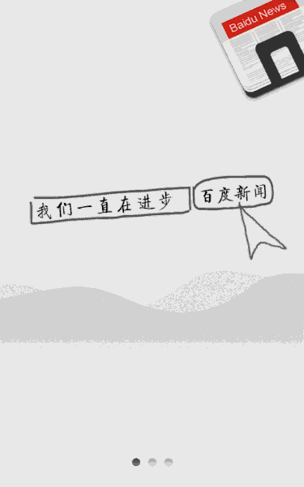

NEWS: Cafe 3.0 is now released!
* Add app travler.
* Add view recorder.
* Record & Replay Demo
* App Traveler Demo
Cafe provides the following benefits:
* You can develop test cases across processes by operating them via Cafe.
* You can get & set system state without changed tested application, such as open or close wifi.
* You can get & set fields of tested objects even invoke functions by calling api.
* The framework can handle system running log for some non-ui check point.
* You can do application UI depth-first travel automated by invoking only one api.
* You can record hand-operations to cafe code and replay it even at another phone or others version android.
Quick Start of Cafe
Import the demo project into eclipse then you can run these test cases either on the emulator or on device. You right click the test project and select Run As --> Run As Android JUnit Test. Example of a test case
API doc
Cafe API docFeatures in future
* Action without waiting, it means application UI idle judged automated.